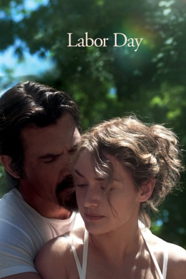
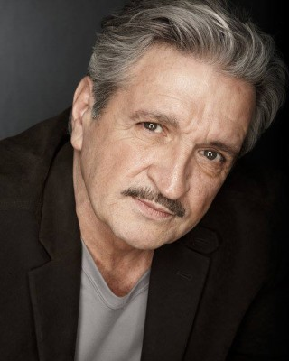

#3017 Labor Day
 
 IMDB-Wertung: 6.9 / 10
IMDB-Wertung: 6.9 / 10  Metascore: 52
Metascore: 52 
1987 in einer Kleinstadt in Massachusetts: Die alleinerziehende Mutter Adele und ihr 13-jähriger Sohn Henry führen ein einigermaßen normales Leben. Doch Adele fühlt sich vereinsamt, seit ihr Mann sie verlassen hat. Eines Tages trifft sie im lokalen Supermarkt einen verletzten Fremden, Frank. Er zwingt Adele, ihn mit in ihr Zuhause zu nehmen und dort zu verstecken. Es wird klar, dass Franks Verletzung vom Sprung aus dem Gefängniskrankenhaus stammt – der Mann entpuppt sich als ein zu 18 Jahren Haft verurteilter Mörder auf der Flucht vor der Polizei. Zwischen Adele und ihrem ungebetenen Gast entwickelt sich jedoch schon bald eine besondere Beziehung, aus der in kurzer Zeit Liebe wird, auch Henry akzeptiert Frank schnell. Das Versteck des gesuchten Verbrechers aber lässt sich nicht lange geheimhalten...
Jahr: 2013
Dauer: 111 Minuten
FSK: 6
Land: USA Studio: Paramount PicturesTonspuren: DD5.1 - ,
Untertitel: Deutsch,
Auflösung: 1080p (1920x800) Größe: 4362 MB
Genre: Drama
Regisseur: Jason Reitman
Drehbuch: Jason Reitman, Joyce Maynard
Soundtrack: Rolfe Kent
Darsteller:
 Kate Winslet als Adele
Kate Winslet als Adele Josh Brolin als Frank
Josh Brolin als Frank- Gattlin Griffith als Henry
 Tobey Maguire als Adult Henry
Tobey Maguire als Adult Henry- Tom Lipinski als Young Frank
- Maika Monroe als Mandy
 Clark Gregg als Gerald
Clark Gregg als Gerald James Van Der Beek als Officer Treadwell
James Van Der Beek als Officer Treadwell J.K. Simmons als Mr. Jervis
J.K. Simmons als Mr. Jervis Brooke Smith als Evelyn
Brooke Smith als Evelyn Brighid Fleming als Eleanor
Brighid Fleming als Eleanor Alexie Gilmore als Marjorie
Alexie Gilmore als Marjorie Lucas Hedges als Richard
Lucas Hedges als Richard- Micah Fowler als Barry
- Chandra Thomas als Bank Teller
- Matthew Rauch als Bank Manager
- Kate Geller als Shopper
- Ed Moran als Prosecutor
- James Chen als Paramedic
- Dylan Minnette als High School Henry
- Eileen Faxas als Anchor Woman #1
- John Rue als Highway Patrolman
- Thomas McGowan als Delivery Doctor
- Elena Kampouris als Young Rachel McCann
- Lauren Kelly als Teenage Rachel McCann
- Dakota Shepard als Wife of Older Henry
- Grace Thorsen als Pregnant Woman
 Marceline Hugot als Mrs. Farnsworth
Marceline Hugot als Mrs. Farnsworth- Matthew Christian als Bar Guy
- Jeff Witzke als Local Cop
- Stephanie Atkinson als Pregnant Mom in Bank , uncredited
 Kt Baldassaro als Woman at Bus Stop , uncredited
Kt Baldassaro als Woman at Bus Stop , uncredited Jeffrey Corazzini als Corrections Officer , uncredited
Jeffrey Corazzini als Corrections Officer , uncredited Richard DeAgazio als Prosecutor , uncredited
Richard DeAgazio als Prosecutor , uncredited- Aaron Dorsey als Chef , uncredited
- Alex East als (uncredited
- Sarah Fischer als Budweiser 80's Girl , uncredited
 Steve Flynn als Bank Customer , uncredited
Steve Flynn als Bank Customer , uncredited John Franchi als Party participant , uncredited
John Franchi als Party participant , uncredited- Ellis Gage als Boy in Amusement Park , uncredited
 Mickey Gilmore als Man Getting Ice Cream with Son , uncredited
Mickey Gilmore als Man Getting Ice Cream with Son , uncredited- Barbara Guertin als Diner Waitress , uncredited
 London Hall als Courtroom Secretary , uncredited
London Hall als Courtroom Secretary , uncredited- Michael J Hammett als Shopping Boy , uncredited
- Mark Hawk als Paramedic , uncredited
 Rosemary Howard als 80s Diner Patron , uncredited
Rosemary Howard als 80s Diner Patron , uncredited- Mike Jablon als Single Dad , uncredited
-  Bobby Kenney als Cop , uncredited
- Jessica Kent als Girl with Ice Cream Cone , uncredited
- John Joseph Lindsey als Patron Chinese Restaurant , uncredited
Datei: X:\2013(I-M)\Labor Day (2013, FSK6, 1920x800).mkv seit 19.01.2016
Festplatte: HD 2013(I-Z)-2014(A-Z)
 Es gibt insgesamt 89 Filme in der Gruppe '2013(I-M)'
Es gibt insgesamt 89 Filme in der Gruppe '2013(I-M)'